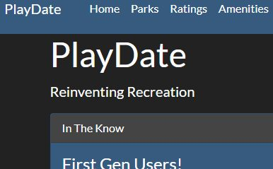
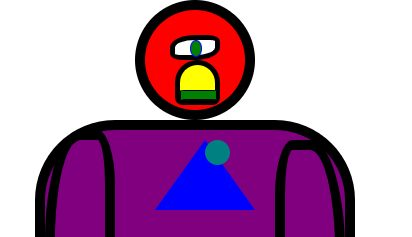

ServiceHub
Real-time manufacturing workflow and operational visibility app. Pushes live status to the floor over SignalR so teams stop chasing updates by radio and spreadsheet.
Application Developer at Kimball International
I build and modernize the internal applications that keep manufacturing running.
Full-stack developer working in C#, .NET, Blazor and SQL Server. I spend my days on the factory floor and in the codebase — turning real operational problems into real-time applications people actually use on every shift.
Toolset
Everything below is something I've shipped or supported in production — not a wish list.
Systems I build & support
These are internal applications at Kimball International, so the source isn't public — but they're where most of my engineering happens. Real users, real uptime expectations, real consequences when something breaks.
Real-time manufacturing workflow and operational visibility app. Pushes live status to the floor over SignalR so teams stop chasing updates by radio and spreadsheet.
Greenfield MVC application supporting the Fan Fold manufacturing process end to end — built on current .NET rather than patched onto a legacy stack.
Background .NET service that generates and delivers order-related notifications to subscribers, with retry handling and delivery logging for auditability.
Equipment-aware scanning application driving shop-floor workflows and integrations. A legacy VB.NET system I maintain, extend, and am incrementally modernizing.
Internal time-tracking application supporting payroll-adjacent business processes across multiple facilities.
Angular front end on a .NET API supporting compensation review cycles. I own support, enhancements, and production troubleshooting.
PowerApps and Power Automate flows that replace manual routing and approvals — the right-sized tool when a full application would be overkill.
Support of legacy integration processes involving SAP IDOCs and mappings, plus Salesforce integration work keeping systems in sync.
Public projects
Projects from my Eleven Fifty Academy immersive and side work — where the career change started.
Team-built application consuming a third-party API, with a shared Git workflow, feature branching, and code review across four developers.

My first full deployment pipeline — a .NET web app built, configured, and shipped to Azure App Service end to end.

An illustration built from nothing but HTML elements and CSS — the project that convinced me a career change was worth it.
Experience
Sept 2022 — Present
Application Developer · Kimball International
Develop, maintain, and modernize internal applications supporting manufacturing and business operations. Build with ASP.NET Core, Blazor, SignalR, SQL Server, Entity Framework and REST APIs; own deployments, integrations, and production issues across multiple systems.
2022
Business Systems Analyst · Kimball International
Requirements gathering, issue investigation, and solution analysis bridging business and technical teams during a transition role.
2021 — 2022
Software Development Immersive · Eleven Fifty Academy
24-week industry-guided program with 500+ hours of project-based coding in C#, .NET and SQL. Graduated with the EFA Gold Badge.
2014 — 2022
Manufacturing Leadership · MasterBrand & Kimball International
Progressed from Continuous Improvement Specialist to Assistant Supervisor to Supervisor — process improvement, employee development, and production problem solving. It's why I can talk to the people who use my software.
About
I spent eight years in manufacturing leadership before I wrote code professionally. That background is the whole reason I'm effective now: I already understood the processes, the constraints, and the people I'd eventually be building for.
Today I focus on application modernization — taking systems that work but are showing their age and moving them forward without disrupting the operation depending on them. I like the unglamorous problems: the integration nobody wants to touch, the legacy VB.NET app that still runs a shift.
I started at Kentucky Wesleyan College playing varsity soccer on scholarship, studying accounting. Private-school tuition made that path unsustainable, so I transferred to Ivy Tech for business administration and started working full-time at MasterBrand — which is where my management career actually began.
In 2021 I taught myself HTML and CSS on nights and weekends, realized I genuinely enjoyed building things, and committed to Eleven Fifty Academy's immersive program.
Outside of work I still play, coach, and referee soccer around my community, and my wife and I spend as much time as we can hiking, kayaking, and traveling.
Contact
Open to conversations about .NET, application modernization, or manufacturing systems — whether that's a role, a problem you're stuck on, or just comparing notes.